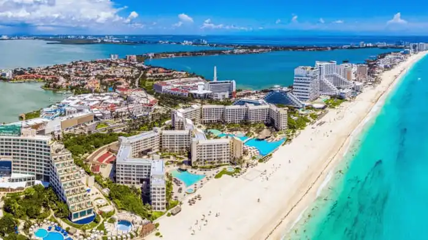

Chichén Itzá

Chichén Itzá es una antigua ciudad maya ubicada en la península de Yucatán, en México. Es famosa por su pirámide escalonada conocida como El Castillo o Templo de Kukulcán, que es una de las Nuevas Siete Maravillas del Mundo. Además de la pirámide, los visitantes pueden explorar otros sitios arqueológicos, como el Templo de los Guerreros y el Juego de Pelota.
Ciudad de México

La Ciudad de México, la capital del país, es una metrópolis vibrante y culturalmente rica. Entre sus lugares más destacados se encuentran el Zócalo, una de las plazas más grandes del mundo; la Catedral Metropolitana, una impresionante iglesia barroca; y el Museo Nacional de Antropología, que alberga una vasta colección de artefactos precolombinos.
Cancún y la Riviera Maya
Cancún y la Riviera Maya son destinos turísticos populares en la costa caribeña de México. Cancún es conocido por sus playas de arena blanca y aguas turquesas, mientras que la Riviera Maya ofrece impresionantes ruinas mayas, parques temáticos y una rica vida marina para practicar snorkel y buceo.